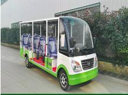

如何维护贵阳旅游观光车的刹车系统？
电动观光车刹车系统的好坏直接影响着电动观光车行使的安全性，因此要对电动观光车刹车系统进行全面的检查及合理的操作是非常有必要的。为了保障您自身和他人的安全家教您了解一般常见问题的操作，如下；电动观光车手刹不灵时可调整前后手刹线的接合部位的调节螺栓；定期检查电动观光车刹车油壶的油量，当油壶内油量快到安全线时必须立即加油，油壶位置一般在仪表台的左上角或座椅框内部；刹车软或刹车不灵时需及时调整刹车间隙和排内的空气；刹车跑偏时可调整制动器内的刹车蹄片与制动鼓的间隙；操作者要定期检查电动观光与车架各固定点的状态，如发现脱与车架磨擦现象的应该及时采取保护措施；需经常检查刹车线的连接装置有无松动及磨损现象，调整电动车刹车可直接调整刹车踏板连接的刹车拉钩上的螺纹进行操作，深圳的售后部人员有循环对车例行检查，安全钟声永远长鸣！
相关标签：贵阳旅游观光车，
下一条：贵阳电动观光车的驾驶注意问题